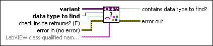
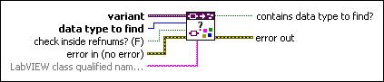

Check for Contained Data Type VI
Owning Palette: Data Type Parsing VIs
Requires: Base Development System
Returns TRUE if variant contains the data type you specify.

 Add to the block diagram Add to the block diagram |
 Find on the palette Find on the palette |
Owning Palette: Data Type Parsing VIs
Requires: Base Development System
Returns TRUE if variant contains the data type you specify.

| Add to the block diagram |
Find on the palette |
 |
variant specifies the variant data from which you want to retrieve data type information. |
 |
data type to find specifies the data type for which you want to search within the data type stored in variant. |
 |
check inside refnums? specifies whether to compare the data type stored in a refnum to data type to find. |
 |
error in describes error conditions that occur before this node runs. This input provides standard error in functionality. |
 |
LabVIEW class qualified name specifies the LabVIEW class name to compare to any LabVIEW class stored in variant when data type to find is LabVIEW Class Instance. If LabVIEW class qualified name is empty, contains data type to find? returns TRUE when variant contains any LabVIEW classes. |
 |
contains data type to find? returns TRUE if variant contains data type to find. For example, if variant is a cluster that contains a Boolean element and elements of other data types and data type to find is Boolean, contains data type to find? returns TRUE. |
 |
error out contains error information. This output provides standard error out functionality. |